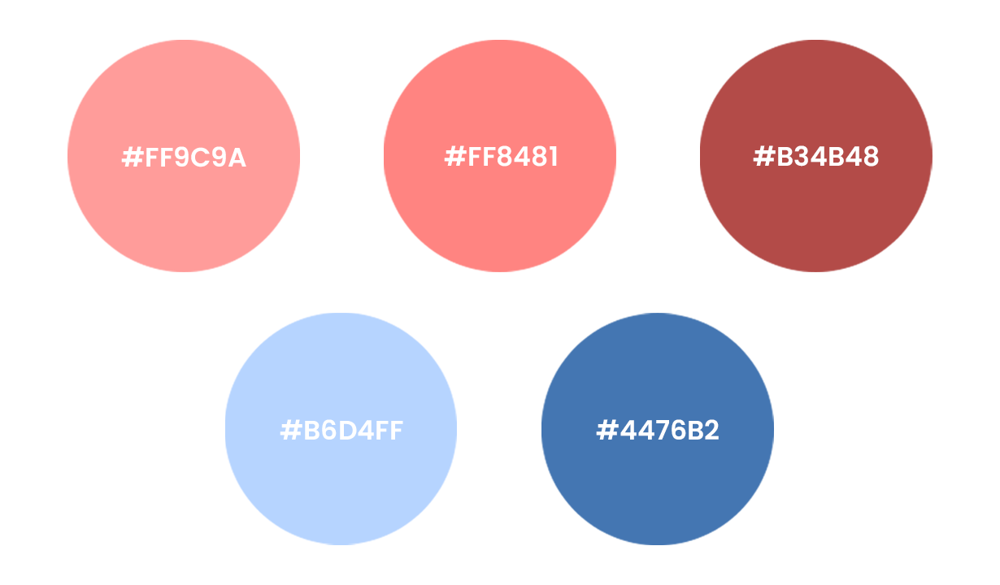
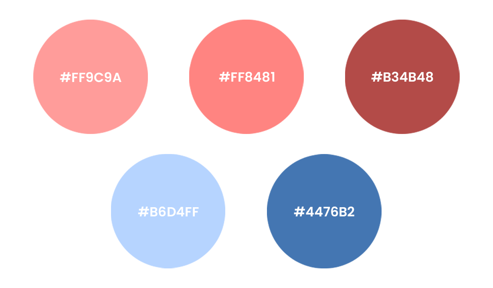
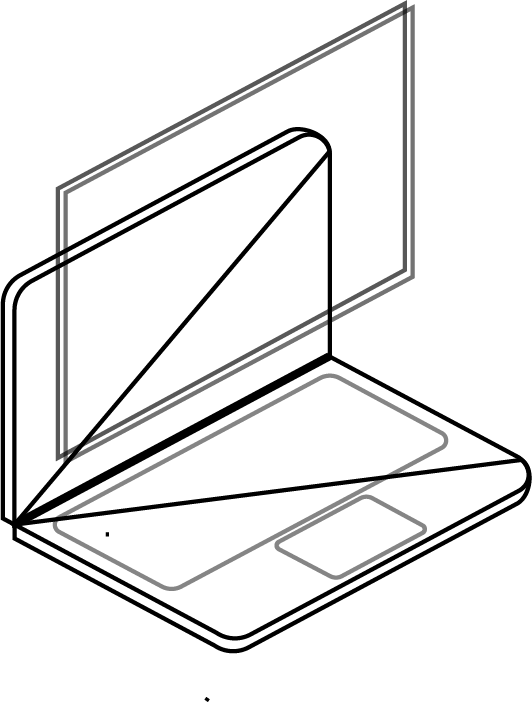

This April, I started learning how to use Adobe Illustrator by following tutorials on YouTube. As somebody who is not that great at drawing in real life, vector art was quite an eye-opener. I enjoyed finding design inspirations on Dribbble, Designspiration, as well as colour palette ideas from Coolors. I eventually started making my own illustrations for fun by experimenting with various designs and colours.
 

This is the same illustration you saw on the main page. The purpose of creating this illustration was not only to make the website livelier, but also to showcase one aspect of my design skills before diving deeper into my projects.
I started by looking for inspiration from other illustrations I worked on before. I was struggling to come up with a design element that depicts ‘projects’ until I recalled a memory of following a gradient tutorial that used a laptop as an example. I figured a laptop would be fitting, considering the amount of time I’ve spent in front of my laptop to work on this website 😥.
Once the design was set, I moved onto creating a colour palette. With the same pink I've been using throughout this website (#FF9C9A) as the base colour, I used a palette generating website called ColorCodeHex.com, which offers colour schemes that match a given colour. After fine-tuning the colours generated by the site, I moved onto the next step of creating the illustration.
Using an isometric grid as a guide, I drew out the 3D laptop and filled in the keyboard and trackpad using the pinks I generated earlier. However, the design seemed too simple and I assumed it was because the laptop was lacking a screen. I added two isometric rectangles of different colours using the blues. I finished off the design by lowering the opacity of these rectangles in order to add some depth to the illustration, which put more focus on the screen rather than the laptop itself.
Finally, I plopped in the illustration next to the list of projects, aligning the top and the bottom of the blue screen to the text's. This was to imply that all of these projects started from my screen, onto yours.